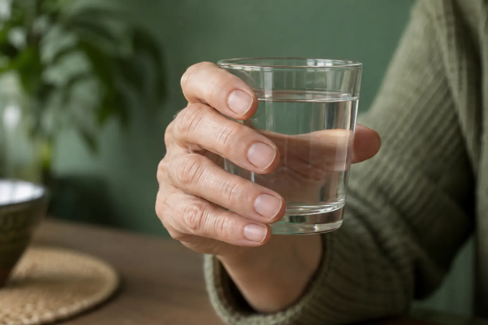

Manikiūras be lakavimo: kas atliekama ir kokio rezultato tikėtis?
Autorius: Madbeauty redakcija · Numatyta 2026 m. gruodžio 3 d. 16:00 (Lietuvos laiku)
Paaiškiname, ką gali reikšti manikiūras be lakavimo, kuo skiriasi natūralių nagų sutvarkymas ir esamos dangos nuėmimas, ir kaip palyginti konkrečiame meniu nurodytus darbus.

Manikiūras be lakavimo – nagų sutvarkymas, kai neplanuojama užtepti naujo spalvinio lako. Tačiau pavadinimas savaime nepasako, ar į paslaugą įeina nagų formavimas, odelių priežiūra, paviršiaus poliravimas ar jau esančios dangos nuėmimas. Rinkitės pagal norimą rezultatą ir konkrečiame meniu išvardytus darbus.
Ką „be lakavimo“ pasako – ir ko nepasako
Šis pavadinimas apibūdina norimą pabaigą, bet nebūtinai visą vizito apimtį. Nagai gali likti be naujo spalvinio sluoksnio, nors paslauga apima jų patrumpinimą ar formavimą. Skaidrus lakas ar kita papildoma priemonė taip pat nėra tas pats, kas visiškai natūralus, be dangos paliktas nagas. Jei jums svarbus būtent toks rezultatas, pasakykite tai aiškiai.
Atskirkite norimą rezultatą nuo papildomų darbų
- Nagų forma ir ilgis – ar norite tik sulyginti ilgį, ar keisti formą?
- Odelių priežiūra – ar ji įtraukta į pasirinktą paslaugą ir ką šis darbas reiškia tame meniu?
- Paviršius – ar norite natūralaus matinio paviršiaus, ar pageidaujate poliravimo ir blizgesio?
- Esama danga – jei ant nagų jos yra, ar nuėmimas įskaičiuotas, ar nurodytas kaip atskiras darbas?
- Pabaiga – ar nenorite tik spalvinio lako, ar nenorite jokios naujos dangos?
Konkretus meniu pavyzdys: dangos nuėmimas
2026 m. spalio 9 d. peržiūrėtame „Vili Nails“ meniu manikiūras be dangos nurodytas kaip 40 min. ir 25 Eur, o variantas su senos dangos nuėmimu – 60 min. ir 30 Eur. Šiame konkrečiame meniu nuėmimo variantas prideda 20 minučių ir 5 Eur. Tai nėra visų teikėjų tarifas ar Lietuvos kainų vidurkis; šis pavyzdys parodo, kad dangos nuėmimas gali pakeisti tiek darbų apimtį, tiek kainą.
Be lakavimo negalima vadinti geliniu lakavimu: gelinis lakavimas yra kitas pasiūlymas, kuriame numatoma danga. Jeigu norite palyginti skirtingus manikiūro variantus, skaitykite platesnį manikiūro gidą.
Kaip tiksliai įvardyti pageidavimą
Galite pasakyti: „Noriu sutvarkyti nagų formą, bet nenoriu naujos dangos. Ant nagų yra sena danga – ar jos nuėmimas įeina į šią paslaugą?“ Jei norite ir odelių priežiūros ar poliravimo, įvardykite tai atskirai. Taip lengviau suprasti, ar meniu pasirinkimas atitinka jūsų pageidaujamą rezultatą.
Jei pastebite nago pakitimą, nebandykite jo paslėpti po dirbtine danga. Amerikos dermatologų akademija rekomenduoja dėl pakitusio nago kreiptis į sveikatos specialistą; kosmetinė paslauga nepakeičia tokio įvertinimo.
Procedūrų aprašai kataloge: Manikiūras be lakavimo. Miestą ir realaus teikėjo pasiūlymą pasirinkite kataloge, kai tokia pasiūla pateikta.
Susiję gidai
Šaltiniai
- Vili Nails · realių paslaugų variantai · www.treatwell.lt
- Room for nails · paslaugų apimtis · www.treatwell.lt
- AAD · manikiūro ir pedikiūro sauga · www.aad.org